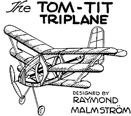
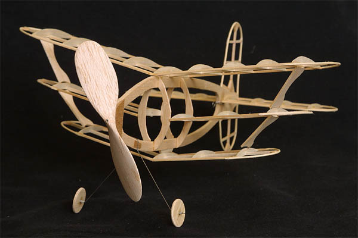
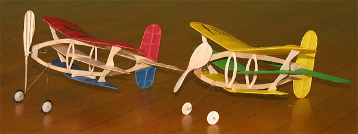
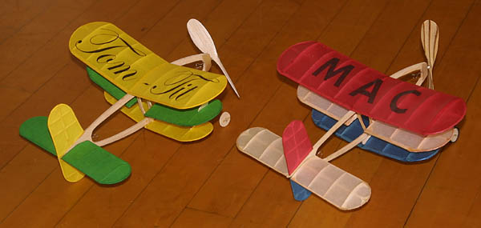
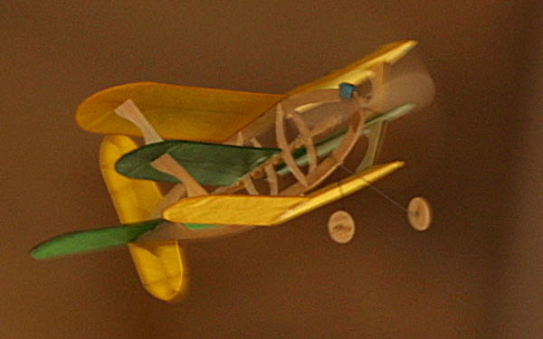

|  | ||||
|---|---|---|---|---|
|  | ||||
| Here is the bare structure for my version of Raymond Malmström's 1943 Tom-Tit Triplane. I had seen plans for this whimsical little design on David Dodge's website (now defunct) a while ago, and finally decided to build one. As you can see in the pictures that follow, I taunted fellow Marin Aero Club member George Benson into building one at the same time. | ||||
|  | ||||
|
George and I thought it best to document our two models before risking flight. You never know!
George's is on the left, with the coloring inspired by the Union Jack of Mother England. For some reason as yet unknown, mine ended up in Australia's national colors. | ||||
|  | ||||
| This image shows the markings we employed. I laser printed the fancy script on the tissue for the top wing of mine. George cut out black tissue and doped it on his. How about George's beautiful prop? A while back he laminated mahogany veneer with balsa and carved two props. This seemed a perfect project to make use of one. My prop was carved from plain balsa based on the block dimensions on the plans. | ||||
|  | ||||
|
As you can see, mine took a slight dab of ballast to trim. Other than that, it seems to be quite happy in the air. Flight times so far are right around 25 seconds or so, with little effort made to optimize the motor.
George's model also flies, but I don't have a picture of it in the air. | ||||
|
Plans are available for free on my plans page.
David's excellent treatise on carving props is available here. If you decide to build a Tom-Tit of your own, take Malmström's notes with a grain of salt. He mentions taking an hour or two to build the plane. George and I both took considerably longer. While building the parts is not difficult, there are quite a few of them. Consider that there are eight flying surfaces to be covered. There are also some fidgety little details in the design, not the least of which is mounting the wings and tail. The shape of the struts as shown on the plan fit neither my model nor George's. I lashed my wings into a simple jig to ensure alignment as I carefully fit new struts. Not difficult, just another step to ensure success. I do not mean to discourage by any means, the Tom-Tit is a delightful model that flies well. Be forewarned though, this is not a good project for a beginning modeler. | ||||
| ||||
Return to
Copyright 2002-2016, Thayer Syme. All rights reserved